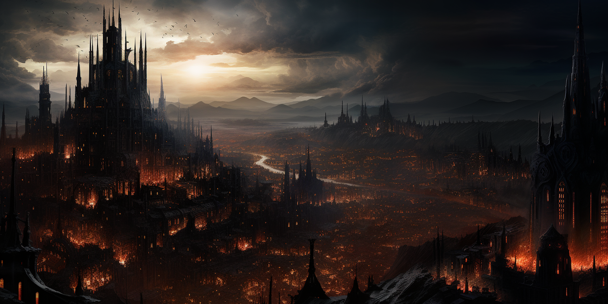

|

Corona de ÉbanoEn el corazón del Cénit Sombrío se encuentra la imponente Corona de Ébano, una ciudad envuelta eternamente en la oscura manta de una noche que la magia ha tejido sobre sus cielos. Bajo la perpetua penumbra, las calles retorcidas de la capital albergan secretos siniestros y conspiraciones que se despliegan en la sombra de cada edificio imponente. En la Corona de Ébano, la sociedad está estratificada en un juego intrincado de aristocracia. Ganarse el favor de la alta bóveda es esencial para vivir como un monarca, donde la magia y la intriga se entrelazan en un maravilloso baile. La aristocracia vive en opulencia y decadencia, cada noble luchando por mantener su posición y estatus en la jerarquía. No obstante, en los bajos fondos, donde la oscuridad es más densa, la ley y el orden se desvanecen. Es un reino de completa libertad, donde ganarse un nombre propio es la clave para sobrevivir. Los callejones ofrecen oportunidades para aquellos dispuestos a arriesgarlo todo, sin importar su origen o pasado. Aquí, en la oscura ciudad de la Corona de Ébano, la libertad y la supervivencia caminan de la mano entre sombras y secretos. |
| Galeria |
|---|